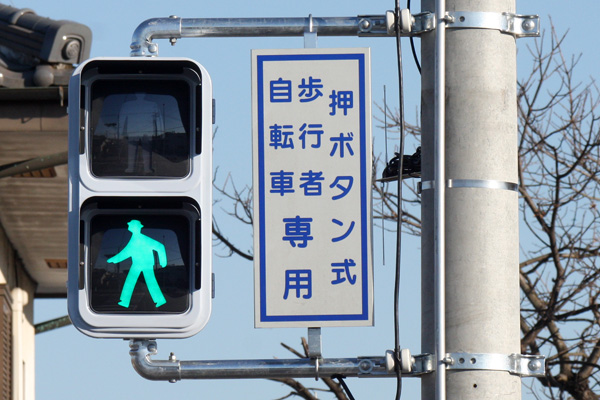
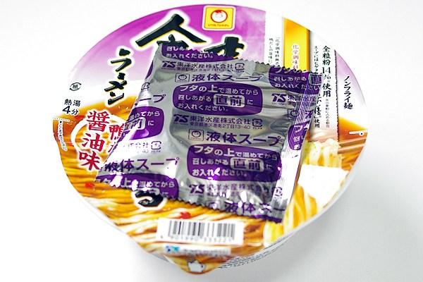

Speaking of New York, White lights on the traffic lights shows that you can go across a cross walk in front. Red has ofcourse the opposite meaning. There is green and red lights in Japan however people call green lights usually blue. Why is it? The answer is not understand at a world wide range because of a peculiar culture coming from the old Japan. We has described the color from green to blue as blue. For instance, green apples have been called as "Ao(blue) - Ringo(apple)" in Japanese
I found out that there is the difference how to cook the japanese instant noodles with the liquid soup packed at out of Japan. The recommendation of the company is as follows. First, you open the package and put the ingreguent over the noodle with no liquid soup and put boiled water. Next stops, you close the top and put the liquid soup bag onto the cover where it gets warm. You wait for 3 minutes a nd put the warmed liquid soup into the cup of your noodle. Done.
Speaking of New York, White lights on the traffic lights shows that you can go across a cross walk in front. Red has the opposite meaning. There is green and red lights in Japan however people call green lights usually blue. Why is it? The anser is not understand at a world wide range because it is a peculiar culture coming from the old Japan. We has described from green to blue as blue. For instance, green apples have been called as "Ao(blue) - Ringo(apple)" in Japan
Speaking of New York, White lights on the traffic lights shows that you can go across a cross walk in front. Red has ofcourse the opposite meaning. There is green and red lights in Japan however people call green lights usually blue. Why is it? The answer is not understand at a world wide range because of a peculiar culture coming from the old Japan. We has described the color from green to blue as blue. For instance, green apples have been called as "Ao(blue) - Ringo(apple)" in Japanese
I found out that there is the difference how to cook the japanese instant noodles with the liquid soup packed at out of Japan. The recommendation of the company is as follows. First, you open the package and put the ingreguent over the noodle with no liquid soup and put boiled water. Next stops, you close the top and put the liquid soup bag onto the cover where it gets warm. You wait for 3 minutes a nd put the warmed liquid soup into the cup of your noodle. Done.